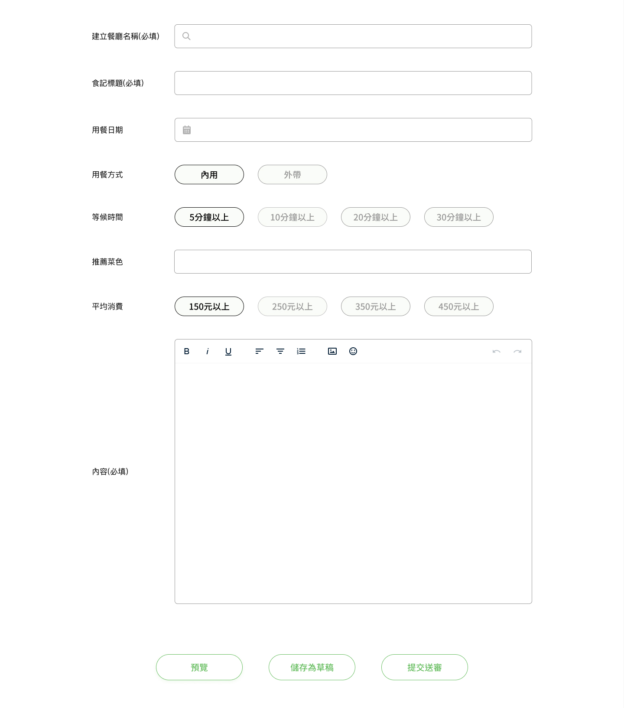
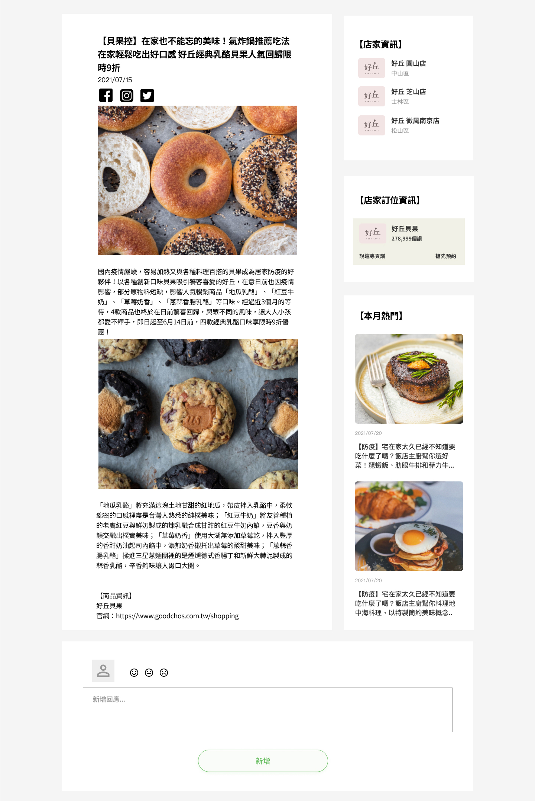

搜尋美食
首頁的搜尋框主要按鈕和提示按鈕沒有區別，不知道如何使用？
這是一個自主改善愛食記官網的專案，重新設計和改善官網。 我的目標是透過已存在的官網，訪談新用戶和易用性測試後，發現存在問題， 思考再次優化原本網站。
資訊架構和介面資訊的呈現是可以優化的目標。 新用戶進到官網搜尋食記時，會有以下問題：
首頁的搜尋框主要按鈕和提示按鈕沒有區別，不知道如何使用？
想要了解餐廳所在位置，放大地圖後發現沒有大眾交通資訊。
首頁的搜尋框主要按鈕和提示按鈕沒有區別，不知道如何使用？
透過使用者訪談目標-新手用戶和易用性測試原本官網，歸納出愛食記官網在整體架構，資訊呈現，還有介面設計這三大項目有可以改善的階段性目標。 在這次專案中，以搜尋食記和新增投稿食記為主要的改善目標。
用戶自行輸入美食和地區關鍵字，符合一般用戶使用上的習慣，以及重新整理首頁內容編排。

在新食紀的撰寫上，提供一些預設選項和搜尋餐廳名稱的選項，搜尋結果帶入餐廳基本資料。 關於食記內容的部分提供簡單的文字編輯器操作，符合一般用戶常見的操作，降低學習成本。
讓用戶知到店家資訊或者分店，訂位等資訊，避免其他不相干的資訊或者影片干擾瀏覽或查找資訊。
